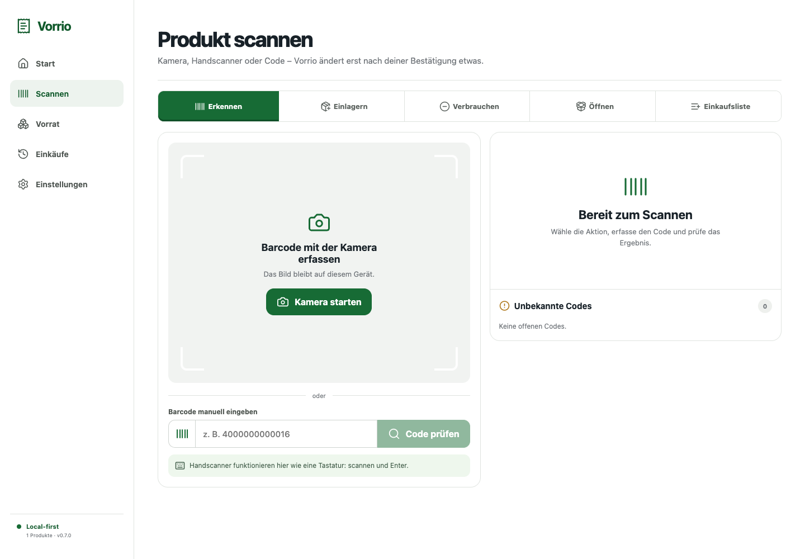
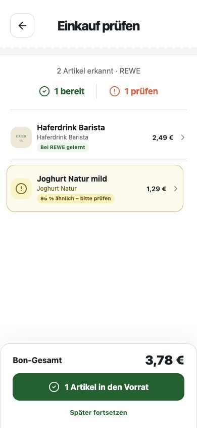
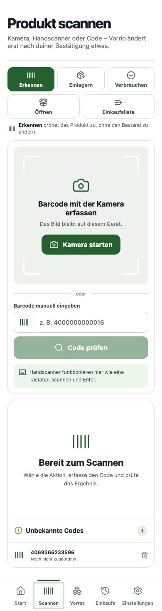
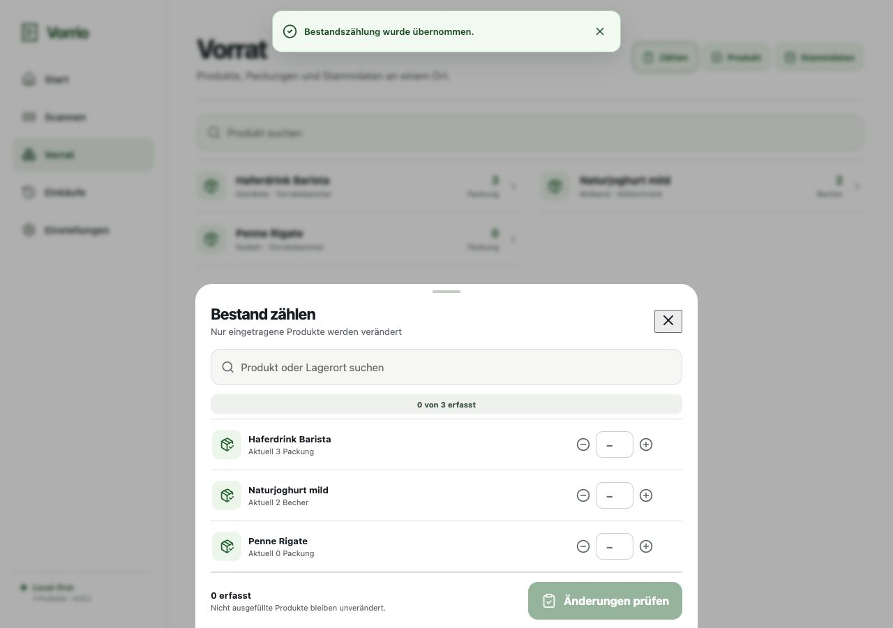
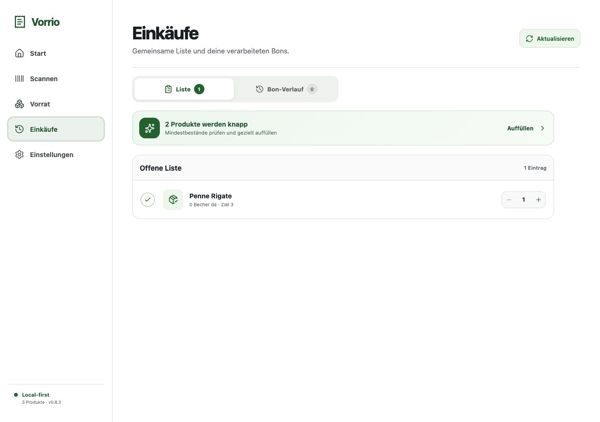
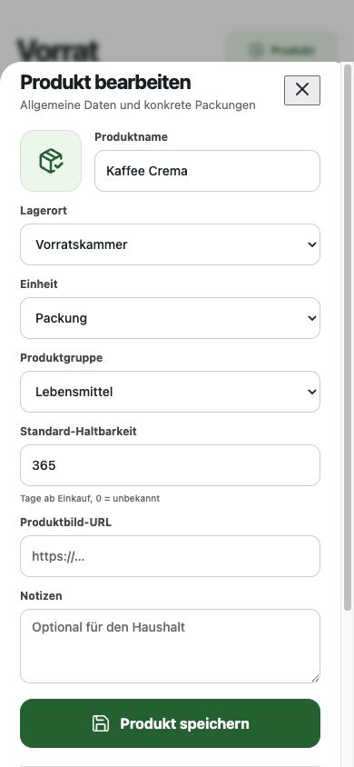

Bons & Scans
Einkäufe als Bon erfassen oder einzelne Produkte per Barcode bewegen.
Vorrio verbindet Bons, Produktscans und deinen aktuellen Bestand – selbst gehostet und unter deiner Kontrolle.


Vorrio bereitet vor. Du entscheidest, was sich ändert.
Bon fotografieren, PDF hochladen oder Barcode scannen.

Treffer, Mengen und Preise verständlich kontrollieren.
Nur bestätigte Produkte landen im lokalen Bestand.

Bestand, Einkäufe und Produktwissen in einer einzigen, selbst gehosteten Anwendung.
Einkäufe als Bon erfassen oder einzelne Produkte per Barcode bewegen.
Produkte, Varianten, Lagerorte und Mengen selbst verwalten.
Mindestbestände erkennen und gemeinsam einkaufen.
Nur bestätigte Haushaltsdaten auswerten – transparent und lokal.


Vorrio läuft auf deiner Infrastruktur.
Bestand und Produktwissen bleiben bei dir.
Kein unsicherer Treffer ändert still deine Daten.
Docker Compose starten, ersten Owner anlegen und Vorrio im Browser oder als PWA verwenden.
$ git clone https://github.com/amturo-gbr/vorrio.git
$ cd vorrio
$ cp .env.example .env
$ docker compose up -d --buildAGPL-3.0-or-later · Docker · Responsive PWA
Vorrio bleibt freie Software. Unterstützung fließt in Wartung, Sicherheit, Dokumentation und öffentliche Build-Infrastruktur.
Finanzielle Unterstützung wird als Sponsoring behandelt; Spendenbescheinigungen sind nicht vorgesehen.